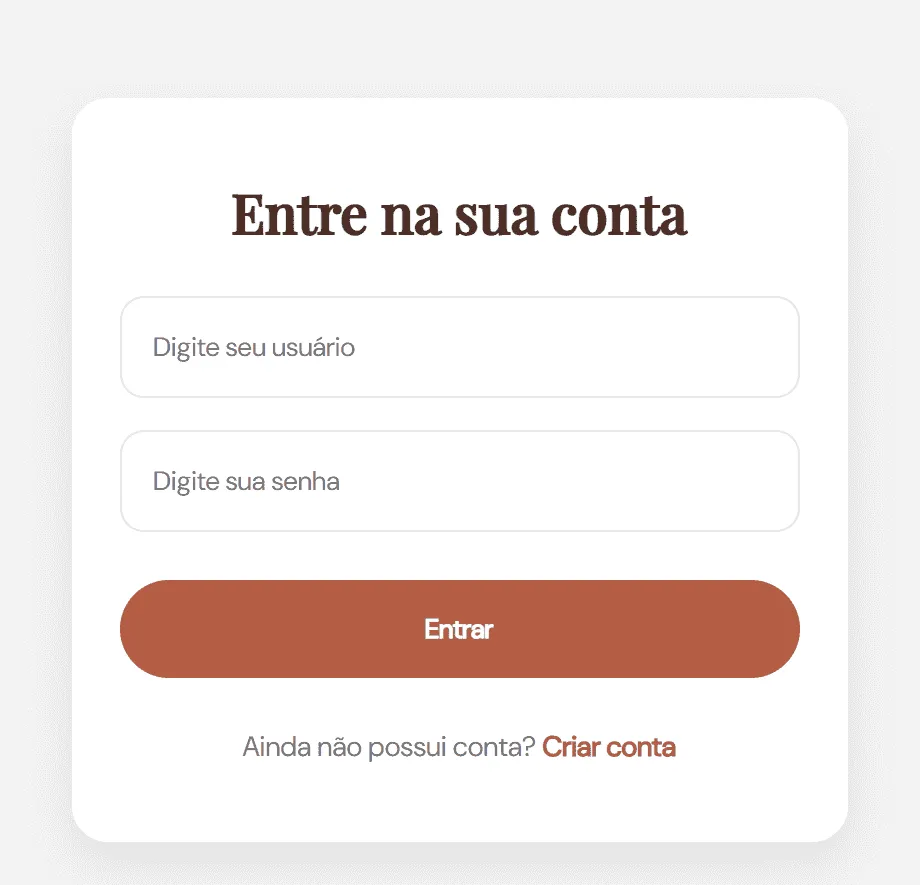

ECOMMERCE CORE
Uma plataforma de e-commerce de alta performance projetada para simular os desafios reais do grande comércio digital. Indo muito além de um carrinho de compras comum, construído com Spring Boot e Angular, o projeto adota a Arquitetura Hexagonal para garantir um sistema escalável, de código limpo e totalmente independente de tecnologias externas.
Uma solução robusta que equilibra uma interface rápida e responsiva com um ecossistema backend focado em segurança rígida e alta estabilidade.
ABOUT_PROJECT
A plataforma gerencia com precisão todo o ciclo de vida de uma venda: desde o controle de estoque em tempo real até o rastreamento do pedido. Pensando na segurança do negócio, o sistema possui permissões dinâmicas que separam perfeitamente o painel do lojista (Seller) da área do consumidor (Client).
O grande diferencial comercial está na automação financeira: através de uma integração inteligente com o Mercado Pago, a plataforma recebe confirmações de pagamento em segundo plano (via Webhooks). Isso elimina falhas humanas e garante que o status da compra mude instantaneamente assim que o banco aprova o pagamento.
É a tecnologia trabalhando para criar uma experiência de compra sem atritos, segura e blindada contra falhas.
TECH_STACK
- Java 21
- Spring Boot
- Spring Security + JWT
- PostgreSQL
- JPA / Hibernate
- MapStruct
- Swagger/OpenAPI
ARCHITECTURE
- Clean Architecture
- Arquitetura Hexagonal
- Domain Driven Design (conceitos)
- Ports and Adapters
- Separação de camadas
- Repository Pattern
FEATURES
- → Autenticação e autorização com JWT
- → Controle de acesso entre clientes e vendedores
- → Gerenciamento de produtos
- → Criação e acompanhamento de compras
- → Fluxo de pagamento integrado ao Mercado Pago
- → Atualização de status através de Webhooks
DATA_FLOW
- 1. Intenção de Compra (Client): O cliente finaliza o pedido na interface responsiva em Angular, disparando uma requisição para o servidor.
- 2. Processamento (API): O backend intercepta os dados, valida as regras de negócio e registra o pedido com o status inicial de PENDING no banco de dados.
- 3. Redirecionamento de Pagamento (Gateway): O sistema conecta-se à API do Mercado Pago, gerando o checkout criptografado para o usuário realizar o pagamento.
- 4. Confirmação Automatizada (Webhook): Assim que a transação é concluída no banco, o Mercado Pago avisa a nossa aplicação de forma assíncrona, enviando uma notificação para um endpoint de Webhook protegido.
- 5. Atualização do Ciclo de Vida (Status Update): O sistema processa a confirmação do pagamento, atualiza o estoque e altera o status do pedido para CONFIRMED, avançando o ciclo da venda sem necessidade de interferência humana.

FRONTEND_MODULE
A arquitetura do projeto foi desenhada para que o site funcione de forma inteligente e fragmentada. Telas fundamentais para a jornada do cliente, como a página inicial e as áreas de cadastro e login, rodam através de componentes autônomos (Standalone Components), o que elimina códigos desnecessários e deixa o carregamento instantâneo.
O visual responsivo se molda perfeitamente tanto em celulares quanto em computadores, mantendo os padrões estéticos da indústria da moda. Essa fundação sólida funciona de maneira isolada, deixando o terreno 100% pronto para a integração com o servidor backend e ativação das funções de compra de forma simples e rápida.
FRONTEND_STACK
- Angular
- TypeScript
- SCSS
- HTML5
- Angular Router
- HttpClient
- Reactive Forms
FRONTEND_ARCHITECTURE
- Standalone Components
- Feature Based Structure
- Lazy Loading
- Componentização
- Design System próprio
- Separação de responsabilidades
USER_FLOW
O fluxo de ponta a ponta foi projetado para que a experiência do usuário seja fluida, rápida e totalmente segura, operando da seguinte forma:
- 1. Acesso e Clique: O usuário interage com uma interface modular que responde instantaneamente.
- 2. Disparo de Dados: O frontend envia as ações do usuário direto para a API em Spring Boot.
- 3. Validação e Resposta: O servidor processa a lógica de negócio e atualiza a tela sem precisar recarregar a página.
- 4. Proteção Automática: O sistema valida a identidade do usuário em segundo plano, garantindo uma navegação restrita e segura.
FRONTEND_FEATURES
- → Componentes reutilizáveis para interface
- → Layout responsivo para desktop, tablet e mobile
- → Formulários com validação
- → Integração com autenticação JWT
- → Controle de rotas protegidas
- → Consumo de API REST utilizando HttpClient
- → Organização baseada em features